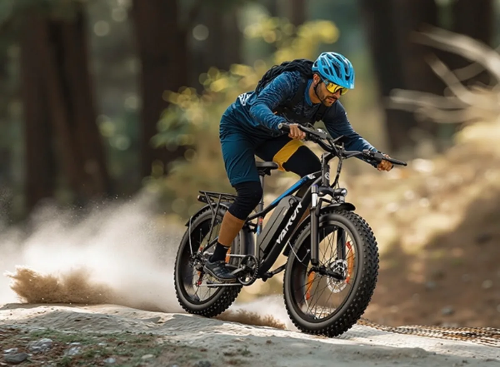

Mocny rdzeń
Podjazdy i długie dystanse bez nerwowego tempa
Wysokowydajny silnik 48 V 250 W generuje moment obrotowy 80 Nm, dzięki czemu rower sprawnie pokonuje nachylenia do 30°. Maksymalna prędkość 25 km/h jest zgodna z normami UE, więc sprzęt dobrze pasuje do rekreacji, dojazdów i tras po okolicy.
- Silnik 48 V 250 W
- Moment obrotowy 80 Nm
- Wspomaganie do 25 km/h
